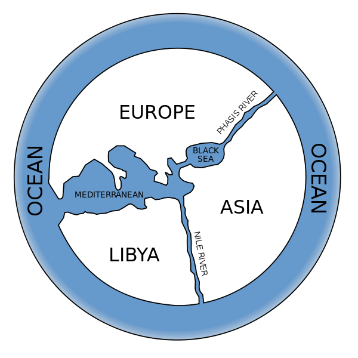
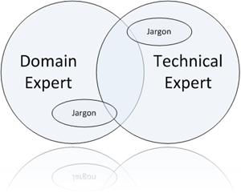

DDD
Domain Driven Design

Subtítulo: Enfrentando complexidade no coração do software
Dividido em 4 partes
- I - Fazendo o Domain Model funcionar
- II - Os blocos de montagem de um Model-Driven Design
- III - Refatoração para uma visão mais profunda
- IV - Design Estratégico
I - Fazendo o Domain Model funcionar
Apresenta os princípios básicos do DDD, definição de termos e traz um overview das implicações do uso de modelagem de domínio para direcionar comunicação e design
II - Os blocos de montagem de um Model-Driven Design
- agrupa boas práticas de domínio orientado a objetos em alguns pontos básicos
- faz a ponte entre modelagem e prática
- foca em tipos de decisão que mantém o modelo e a implementação alinhados, um auxiliando o outro
III - Refatoração para uma visão mais profunda
- vai além do desafio de definir os blocos básicos, buscando construir os modelos de forma prática que consiga se pagar
- foca no processo da descoberta (modelos valiosos não emergem imediatamente, requerem um bom aprofundamento do domínio)
- parte de um modelo simples e, explorando interações, evolui este modelo até chegar em algo mais profundo
IV - Design Estratégico
- busca situar problemas de sistemas grandes e complexos, de grandes corporações
- interação com sistemas externos e sistemas legados
Um bom modelo do domínio pode ser muito valioso, mas não é algo fácil de fazer. Poucos fazem isso bem, e é muito difícil de ensinar.Eric Evans
Alguns de meus projetos foram um sucesso, outros falharam. Uma característica comum dos projetos que foram sucesso foi um modelo de domínimo rico que evoluiu através de interações de design, que se tornaram parte da estrutura do projeto.Eric Evans
No desenvolvimento do livro, o autor busca comentar e exemplificar com alguns projetos de sua experiência.
Modelo
Uma representação de algo, de acordo com os conhecimentos de quem o representa
Modelo do mundo
Sec 6 A.C.
Sec 5 A.C.
Sec 15 D.C.
Sec 16 D.C.

Atualmente
Modelo
- é o coração do design
- um bom modelo está intimamente ligado com a implementação (a análise de um se aplica ao produto final)
- é a estrutura base da linguagem a ser usada na comunicação do time
- Para entender um modelo, é necessário absorvê-lo através de interações
- Geralmente o modelo é algo fora do dia-a-dia do desenvolvedor (sistema fiscal, sistema de controle de linha de produção, sistema de apontamento de horas etc)
A chave para um bom modelo é uma boa comunicação
Comunicação
Experts de domínio
- geralmente tem seus jargões técnicos e raramente falam a "mesma língua" que os times de desenvolvedores
Desenvolvedores
- conseguem entender e discutir as características do sistema, com termos funcionais, porém desprovidos de significados da linguagem dos experts
Desenvolvedores
- criam abstrações baseadas em seu entendimento, mas que não faz sentido algum para os experts de domínio
- desenvolvedores trabalhando em diferentes partes do problema tem diferentes entendimentos, cada um resolvendo o problema "como acha que deve ser feito"
Ubiquitous Language
(Linguagem Ubíqua / Onipresente)
Ubiquitous Language
- a ideia é conseguir alinhar os termos referentes ao negócio entre ambas as partes (time de desenvolvimento e experts de domínio)
- não é mágica, é necessário que os dois lados tenham contato e consigam conversar "na mesma língua", comum entre ambos
- treino e repetição ajudam o time a melhorar a comunicação
- a linguagem ubíqua será usada para comunicação entre o time, no código produzido pelos desenvolvedores, diagramas e no discurso
- com o tempo, a linguagem vai amadurecendo entre o time, melhorando alguns termos, o que deve ser refletido no código e outros assets
Model-Driven Design
Com o conhecimento da linguagem do domínio, buscamos entender e modelar o sistema a ser construído para refletir o domínio
Arquitetura
User Interface
Responsável por exibir informações
Application
Coordena as tarefas e delega a responsabilidade para o domain ou infra.
Camada fina, cuja responsabilidade é gerenciar a comunicação entre UI - Domain/Infra
Domain
Representa conceitos de negócio, regras de negócio, lógica sobre o negócio. É o coração do software
Infrastructure
Abstrai lógica de itens técnicos, como envio de mensagens, persistencia e até código que auxilia a UI
E se eu tenho um projeto muito simples, preciso de todas essas camadas?
As ideias aqui apresentadas, conforme citado pelo autor, são para projetos mais ambiciosos, visando crescimento.
Se o excel te atende, não precisa criar um sistema, use o excel!
Conceitos para modelagem de software
Entidade
Representa um objeto único do domínio, que possua uma identidade conceitual no contexto do domínio
| Domínio | Entidade |
|---|---|
| Pessoa | João (possui nome, CPF, que o identificam e diferenciam de outras Pessoas) |
| Transação bancária | Depósito (conta destino, data/hora) |
Value Object
Representa objetos auxiliares, que não possuem uma identidade conceitual
Geralmente usados para descrever algumas características de algo
Serviço
Representa uma operação que não está associada diretamente com um domínio
Características:
- operação referente a um conceito do domínio que não é uma parte natural de uma Entidade ou um Value Object
- a interface é definida em termos de outros elementos do domínio (ex: operações com mais de uma entidade)
- operação aplicável a qualquer elemento do domínio (não apenas ao item ID 123)

- App (TransferenciaContabilAppService)
- parseia input (XML, JSON, request)
- chama service domain para continuar o processo
- aguarda confirmações e trata resposta recebida
- Domain (TransferenciaContabilDomainService)
- faz a interação com outros objetos de domínio (conta contábil, livros de entrada/saída etc)
- processa os débitos/créditos
- Infrastructure (NotificationService)
- envia e-mail confirmando operação
Modulos (pacotes)
Representa um agrupador de itens referentes a um mesmo conceito, buscando seus nomes da linguagem ubíqua
Modelagem e comportamento dos Domains
Agregação
Em uma associação entre domains, as agregações são formas de destacar a entidade que coordena outros domínios
Apagando-se a raiz da agregação, todos os outros itens são removidos também, pois a agregação deixa de existir
Fábrica
Facilita a criação de objetos (ou até uma agregação completa)
Pode ser um construtor comum (em casos mais simples) ou uma implementação do pattern Factory do GOF
Repositório
Uma interface clara que simplifica a forma como as entidades trabalham com dados
Ex: PedidoRepository -> buscarPedidoPorNumeroAntiCorruption Layer
Em um exemplo de integração com um outro sistema, uma classe (ou conjunto) acaba sendo a responsável por "conversar" com o sistema externo
- Esta camada é responsável por traduzir as informações recebidas do sistema em algo do domínio em questão
- Alterações no sistema terceiro não impactam o sistema como um todo, mas demandará ajustes na AntiCorruption Layer